☀
Variable Oscillations
☀
Variable Oscillations
Auxiliary Research Station
 The Evolving Vector Environment is a series of polyphonic digital synthesizers that utilize Vector Phase Shaping [VPS] Synthesis in various forms.
The Evolving Vector Environment is a series of polyphonic digital synthesizers that utilize Vector Phase Shaping [VPS] Synthesis in various forms.
The synthesizers' modules are connected in matrices of attenuators, allowing for flexible audio signal and modulation routing.
[ EVE-01 Reaktor Instrument ]
[ Vector Phase Shaping Synthesis ]
